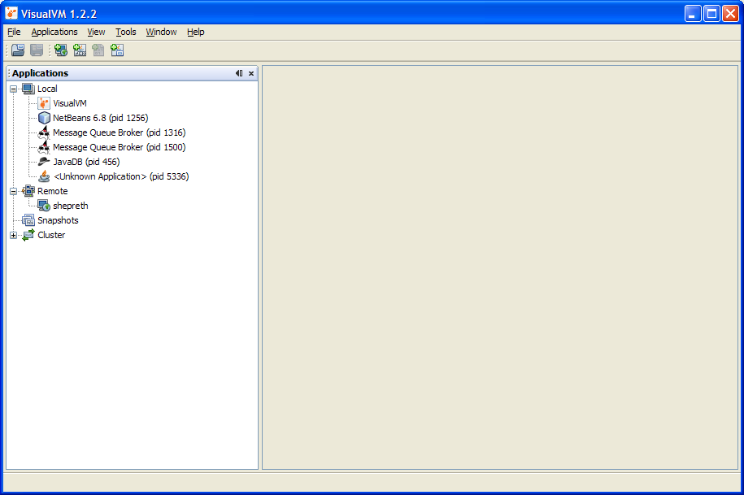
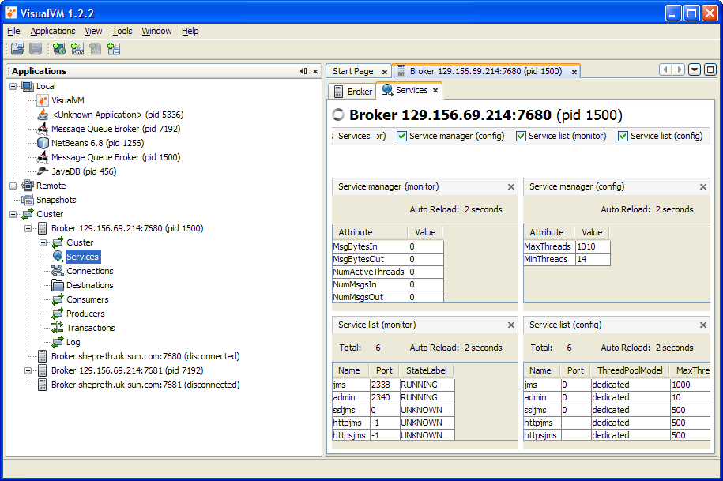
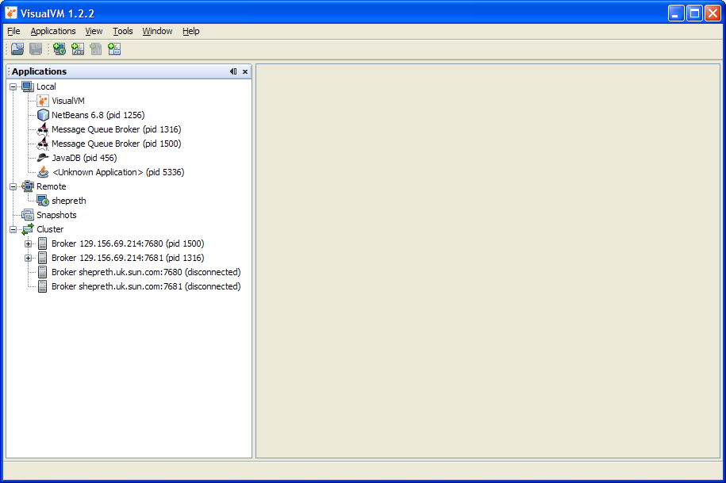
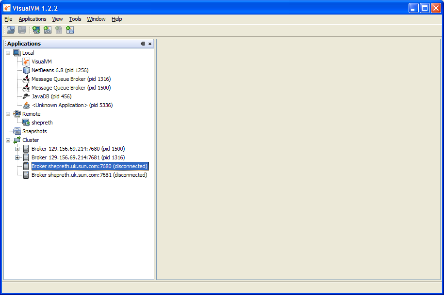
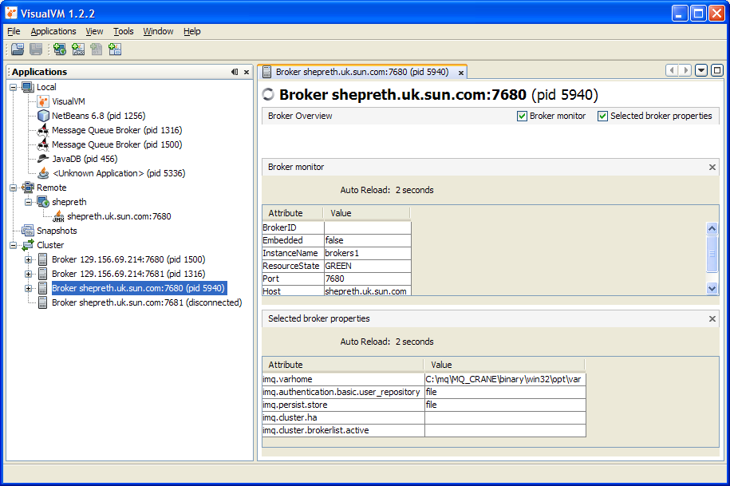
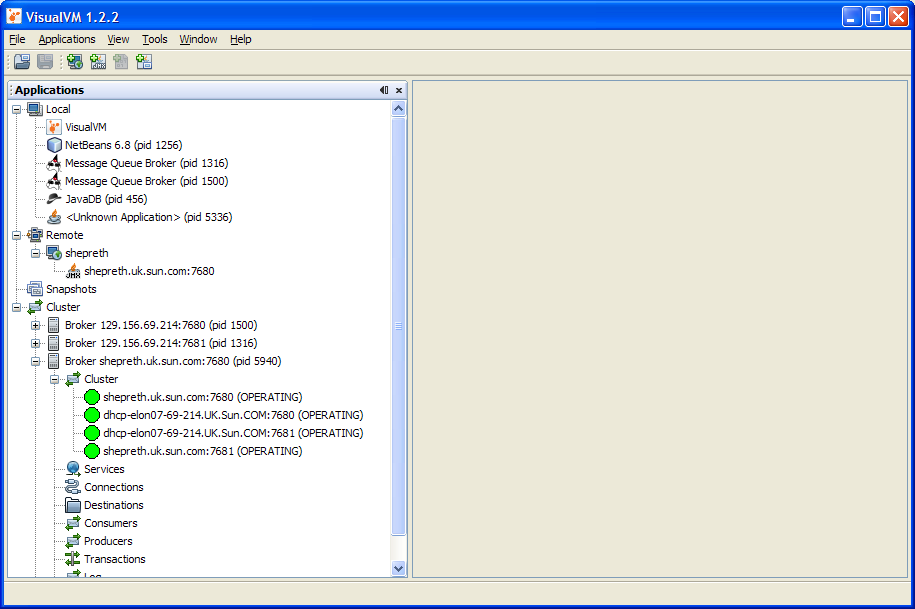
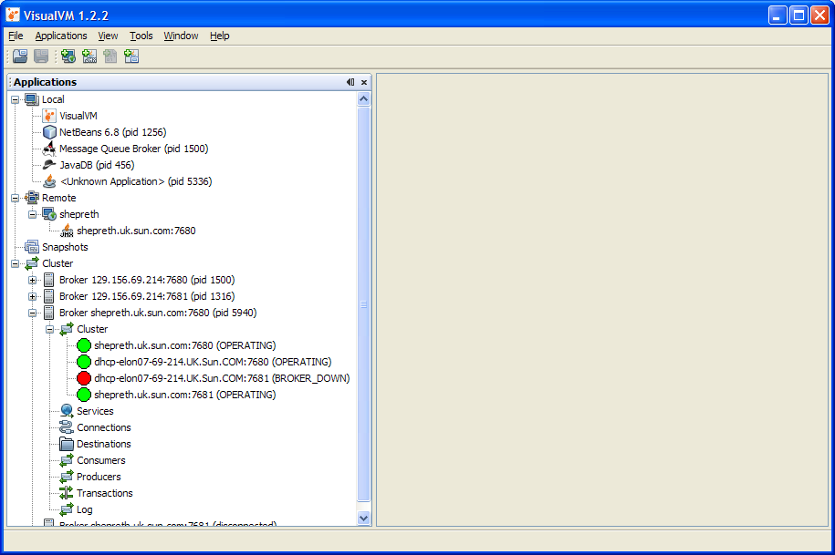
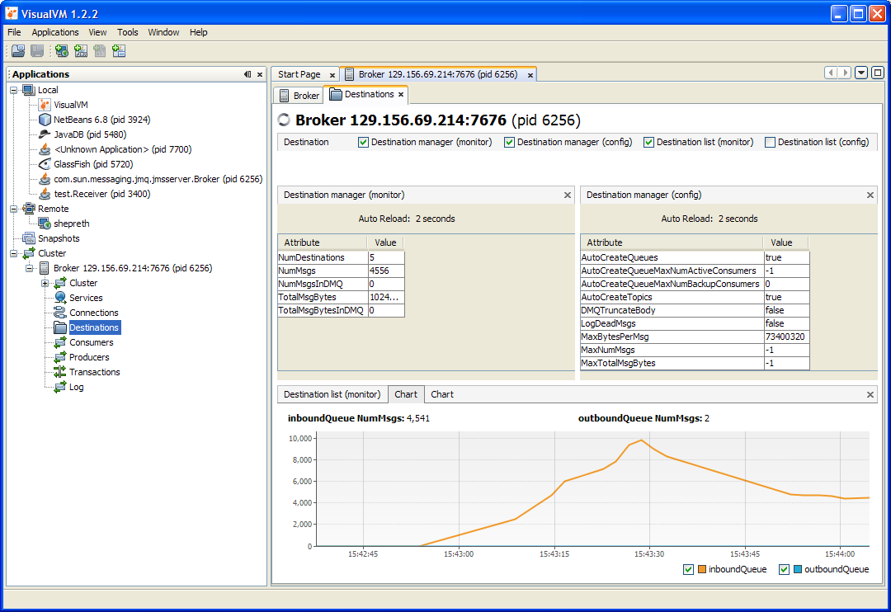

This is a summary of the proposed changes to the MQ plugin for VisualVM for MQ 4.5 / Glassfish 3.1. Please read in conjunction with the one-pager.
The following enhancements are proposed:
The following enhancements are also considered desirable, but due to resource constraints are currently out of scope for this phase of work:
Improved display of cluster information
When the user starts VisualVM with the MQ plugin installed, VisualVM will identify any clustered brokers running on the local machine and create a new root-level node representing that cluster.
For HA clusters the cluster node is labelled with the cluster ID is shown. For conventional clusters, where cluster ID is not used, the cluster node is simply labelled with the word "cluster".

The cluster node can be expanded to display all the brokers in the cluster. For those brokers which are running on the local machine, a "broker" node is created which behaves identically to that created in the current version of the plugin, except that it is placed under the cluster root node rather than the application node.
Note that the application node is still displayed and labelled as a "Message Queue Broker", allowing other plugins to be used to monitor its memory usage, etc, but has no special MQ functionality apart from being identified as a MQ broker.

The list of brokers in the cluster is determined by aggregating the brokers listed in the cluster monitor MBean of each local broker, and so may include brokers running on other machines.

Brokers running on other machines are initially shown simply as "disconnected":

If the user clicks on a disconnected broker, they will be prompted for username and password and a JMX connection is created. This creates the subnodes under the broker node to give full access to monitoring information. See how the disconnected broker that was highlighted in the previous screenshot is now shown as connected, with a "+" icon to provide access to the new subnodes:

Under each connected broker is a node called "cluster". This shows that broker's view of the cluster. It has a subnode representing each broker in the cluster. If the broker has successfully established a cluster connection to that broker it is represented by a green icon and its state is shown as "OPERATING":

If one of the other brokers in the cluster is not running or has failed, the icon is shown in red and its state shown as "BROKER DOWN". If the broker subsequently restarts and a cluster connection is established the icon will change to green and its state changes to "OPERATING"

The icon for a broker (whether connected or not) should be shown in agreen or red colour that reflects whether that broker is actually running, as determined by periodically connecting to its portmapper (no user/password required). When a broker goes down, the broker node should remain but change back to "disconnected" and its colour should change to red. When the broker goes back up, it should change to "green" and become available for connection once more.
Allow navigation between host, connection, destination, producer and consumer
This requirement is not fully-defined. But there is a need to be able to see the relationship between these entities more clearly. Ideally the tool should allow the user to:
The user should be able to browse all the messages on a destination and inspect individual messages.
Each table of monitoring information (e.g. the destination monitor list) will offer the ability to display a given attribute value in a chart which is updated whenever the table is updated (2 seconds by default). The chart will look something like this:

To keep things simple, each chart will display a single attribute for several rows in the table. For example, the above table shows the NumMsgs attribute for two specific destinations.
If more than one attribute needs to be charted, the user can open a second chart.
In addition to the above, the following miscellaneous improvements will be added:
More obvious subview labels. In the current version of the plugin, each MBean is shown using a separate subview, with the subviews given names such as "destination manager (config)" for static configuration information common to all destinations and "destination list (monitor)" for dynamic monitoring info for each destination. These descriptions reflect the MBean names, which means they are a bit obscure. They should be replaced by more obvious names.
Review attributes displayed by default. Many tables allow large numbers of attributes to be displayed. We need to review which attributes are displayed by default see see if any changes are needed. For example, the connection list should show clientID by default.
Save preferences. Currently the user can choose which attributes are displayed. They can also change the column order and column width. It should be possible to save this information in the logged-in user's profile.
Show all broker properties. Enhance the broker view to allow all broker properties listed in the manual to be viewed. They should be presented in the same groups in which they are listed in the admin guide. If possible, properties should be shown on the relevant tab: e.g. logging properies shown on the existing "log" tab.
Critical parameter status summary
This enhancement is out of scope for this one-pager but is included here for completeness and so that it may be considered for implementation in the future.It is proposed that a new "critical information panel" be added which shows in a single place a selection of monitoring properties which are considered critical.
When a parameter shown on this panel deviates from some defined "normal" value it would be highlighted in some way and perhaps the broker icon could be changed to draw attention to this.
Examples of critical properties:
The idea is that an operator, who thinks there's something amiss with the JMS service but doesn't know what, can start the tool and identify quickly those aspects of broker operation which are operating outside of the normal parameters. This would allow the operator quickly to correct the situation and/or decide that the problem(s) are elsewhere.
The list of critical properties, and the bounds of normal operation, might be user-configurable.
This enhancement is out of scope for this one-pager but is included here for completeness and so that it may be considered for implementation in the future.The plugin will provide quick and convenient access to logging data, to allow the operator to find out quickly whether the broker has logged any errors or warnings recently which may require attention.
When a new logging message arrives after the plugin has been started it will be displayed on an appropriate tab. The user will be able to choose the level of logging that they wish to see. This feature would use the logging notification feature of the JMX API.
When a critical (or equivalent) error message is logged, this will be highlighted on the logging tab and perhaps by changing the broker icon. Since this would only be possible for errors logged after the plugin has been started this would be of limited value, so further investigation is needed to determine how best to provide JMX access to messages which were logged prior to starting the VisualVM plugin.
The new features described in this document are for monitoring only. They will not include the ability to change the state of the broker.
None of the following operations supported by the JMX API will be possible through this tool:
None of the following non-JMX operations will be possible through this tool:
No new JMX monitoring features will be added.
Other items described above but stated explicitly as being "out of scope" will not be included:
Note that this does not preclude the adding of these features in a later version of the plugin.
Version 1: Nigel Deakin, 20th Jan 2010
Version 2: Nigel Deakin, 26th Jan 2010
Version 3: Nigel Deakin, 15th May 2010
template version: @(#)onepager.txt 1.10 04/03/18